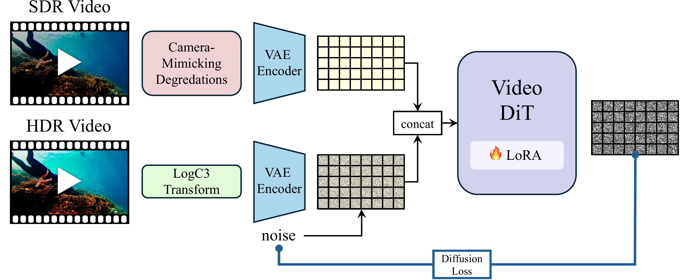
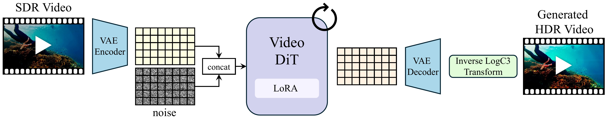

Drag the exposure slider to reveal how our HDR output preserves detail across the full dynamic range, while the SDR input clips to white or black. Use the arrow keys or click on EV ticks for fine control.
Drag the divider to compare SDR input with our HDR-graded output. The HDR version recovers highlight and shadow detail that is permanently lost in the SDR.
Full video comparisons showing SDR input alongside our HDR output, tone-mapped to reveal the extended dynamic range.
High dynamic range (HDR) imagery offers a rich and faithful representation of scene radiance, but remains challenging for generative models due to its mismatch with the bounded, perceptually compressed data on which these models are trained. In this work, we show that HDR generation can be achieved in a much simpler way by leveraging the strong visual priors already captured by pretrained generative models. We observe that a logarithmic encoding widely used in cinematic pipelines maps HDR imagery into a distribution that is naturally aligned with the latent space of these models, enabling direct adaptation via lightweight fine-tuning without retraining an encoder. To recover details that are not directly observable in the input, we further introduce a training strategy based on camera-mimicking degradations that encourages the model to infer missing high dynamic range content from its learned priors. Combining these insights, we demonstrate high-quality HDR video generation using a pretrained video model with minimal adaptation, achieving strong results across diverse scenes and challenging lighting conditions.

